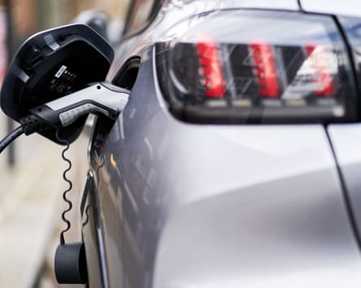
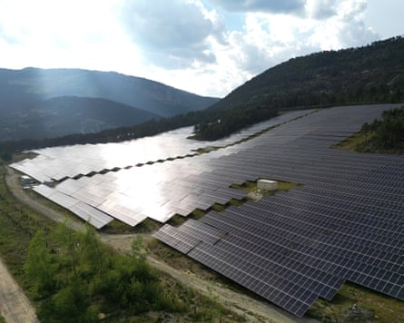

The European Union’s rollback of environment policy is gaining momentum, campaigners have warned, in a deregulation drive that has shocked observers with its scale and speed.
EU policymakers have dealt several critical blows to their much-vaunted European Green Deal since the end of 2023, when opinion polls suggested a significant rightward shift before the 2024 parliamentary elections. Environment groups say the pace has picked up under the competition-focused agenda of the new European Commission .
The most striking examples are the “omnibus” packages that water down sustainable finance rules, some of which have been put on hold even before they came into force, and which member states proposed diluting further on Monday. The European Commission has promised more simplification measures to “radically lighten the regulatory load” on people and businesses.
In the first six months of the new European Commission mandate, the EU also delayed a law to stop deforestation in supply chains by one year, gave carmakers two extra years to meet pollution targets and downgraded the protection status of the wolf . Environmental NGOs have found themselves in the crosshairs of a funding freeze they argue undermines democracy.
The political tensions reached a high this week after an anti-greenwashing law was seemingly killed in the final stages of negotiations.

Under the first six months of the new European Commission, the EU has delayed a law stopping deforestation.Photograph: Estela Silva/EPA
The warnings of green backsliding come amid a global slump in efforts to cut pollution. In the UK, the government has faced growing political resistance to its target to hit net zero by 2050. In the US, Donald Trump has begun his second term with a series of attacks on environment agencies and policies as he seeks to promote fossil fuels. “DRILL, BABY, DRILL!!!” he told the US Department of Energy in a social media post on Monday. “And I mean NOW!!!
Green groups say similar – albeit less sensational – shifts are under way in Brussels, which boasts some of the most ambitious rules to clean up a polluting economy.
“There has been a radical change in political priorities – and this came before Trump was even close to election in the US,” said Marco Contiero, Greenpeace EU’s agricultural policy director.
Bold green policies from the EU’s executive body have typically been watered down as they pass through protracted negotiations with other institutions. Critics say ambition is now being lost at the top while resistance is growing stronger throughout the legislative process. After farmers’ protests swept across Europe last year, lawmakers and member states nearly killed off a nature restoration law that EU institutions had already negotiated.
It was the first sign of open revolt against the Green Deal that the centre-right president of the European Commission, Ursula von der Leyen, had put forward in 2019 after student climate protests.
“The fact that the Green Deal became the poster child of the first von der Leyen Commission was received with surprise by civil society, industry, and lobbies,” said Contiero. “In a very similar manner, so has her decision to radically change her approach.”
European carmakers are to be given two extra years to meet this year’s pollution target.Photograph: John Walton/PA
In mission letters to commissioners in September, von der Leyen set targets to reduce administrative burdens by 25% for all companies and by 35% for small- and medium-sized enterprises, with a “one in, one out” principle to ensure that new rules displaced existing ones. The Commission also promised to fight “gold-plating” measures, in which member states add their own rules that go beyond what the EU requires.
The push to cut red tape has been led by the European People’s party (EPP), the largest group in parliament and the political home of 15 of the 27 commissioners, including von der Leyen. Its shift in tone has increasingly led to it siding with far-right forces. The cancellation of the anti-greenwashing law this week came after EPP and far-right lawmakers separately wrote to the European Commission to withdraw the bill. The EPP later celebrated the bill’s withdrawal as “a win for European companies”.
Tiemo Wölken, a German MEP from the centre-left S&D grouping who led negotiations of the proposal, said: “The Commission obviously wanted to fulfil the wishes of the right, and this is what is so scandalous. The EPP is again working with the far right to get rid of Green Deal files, but are pretending they are still in the middle and working with pro-European democratic forces.”
The Commission has said it is pursuing an agenda of simplification rather than deregulation, and that its focus on competitiveness does not contradict the environmental aims of the Green Deal. It has also put forward plans to green industry, such as the Clean Industrial Deal, which have been celebrated as driving the energy transition in the EU forward.
Paul de Clerck, a campaigner at Friends of the Earth Europe, said the scale of the cuts in the first omnibus proposal in February showed that the simplification argument was “basically bollocks”.
The Commission’s plans postpone corporate sustainability reporting requirements by two years and reduce the number of companies in its scope by 80%; delay corporate due diligence rules by one year; remove a requirement to conduct in-depth impact assessments; scrap a civil liability clause that would make it easier to sue companies; and exclude about 90% of businesses from the carbon border adjustment mechanism. Member states on Monday proposed reducing the scope even further.
De Clerck said: “This is highly relevant because it’s the first proposal under the simplification agenda that’s been put forward and … it’s not just weakening it a little bit, it’s slashing it. The heart of the proposal has basically been taken out.”
Political support for environment rules has dried up in several wealthy economies in the past year, even as the energy transition gains pace and an overwhelming majority of people say they want governments to cut pollution faster.
The rollback comes despite the energy transition gaining pace and the majority of the public wanting pollution to be cut faster.Photograph: Sébastien Nogier/EPA
European businesses have long complained of complex rules that hamper innovation and make it harder for them to compete with foreign companies.
“The Green Deal often overlooked challenges like high energy costs or lengthy and complex permitting procedures,” said Markus Breyer, the director general of the industry association BusinessEurope. “The current focus on competitiveness reflects a more balanced and pragmatic approach that better aligns climate goals with economic realities.”
Critics counter that failing to quickly transition to a clean economy will jeopardise economic prosperity in the medium term, as well as saddling individuals and governments with the cost of climate damages. Contiero said the EU would be “crushed by larger blocs such as the US and China” if it continued to play by 20th-century rules.
“Investing in the Green Deal means decoupling economic growth from the use of natural resources – that was the essential element that made an awful lot of sense for the 21st century,” he said. “Abandoning such a critical approach will take away the competitive advantage that Europe could have had.”